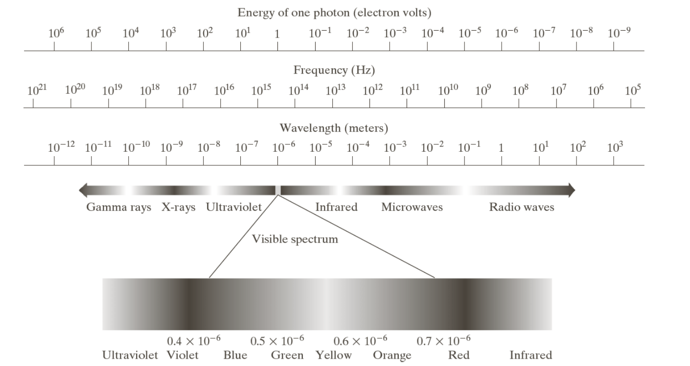

L2 - 数字图像处理基础¶
图像的感知、捕捉、数字化¶
-
人眼对图像的感知：人们主观感受到的亮度是肉眼接受到的光强的对数函数。视觉系统通过改变灵敏度来实现在不同的光强范围内工作。
几个概念：光强、主观亮度、亮度适应现象、亮度适应级别、马赫带效应、错觉 - 可见光和电磁波谱
与这张图对应记忆  - 图像的感知和获取：我们常以传感器获取图像。传感装置常以阵列形式排列，如CCD阵列，其每个传感器的响应正比于投射到传感器表面的光能总量。 - 简单的图像形成模型：可以用如下的图像形成模型来形成灰度图像令单色图像在任何坐标(x_0,y_0)处的强度(灰度)表示为l=f(x_0,y_0)，其中l的取值范围为[L_{min},L_{max}]，该区间称为灰度级（或强度级）。实际应用中常令该区间为[0,L-1]，其中l=0为黑色，l=L-1在灰度级中为白色。 - 取样：坐标值离散化（连续图像变成纯色小方块）
量化：幅度离散化（灰度值取离散值）
数字图像的质量在很大程度上取决于取样和量化中所用的样本数和灰度级。 - 连续图像经过取样和量化成为数字图像，可以在计算处理和算法开发时用数字阵列表示。在某些情形中也可以用传统矩阵表示法来表示。
数字图像处理中的基本概念¶
- 空间分辨率：图像中可辨别的最小细节的度量，可用dpi度量
- 灰度分辨率：量化灰度级所占比特数（256灰度级的图像的灰度分辨率为8比特）
- 等偏爱曲线（改变N与k后不同的图像主观质量变化不同）
图像内插¶
本质上，内插是用已知数据来估计未知位置的数值的处理。
- 最近邻内插：把原图像中最近邻的灰度赋给了每个新位置，最简单，直边缘失真严重。
- 双线性内插：用4个最近邻点去估计给定位置的灰度，计算稍复杂，效果较好。
注意：双线性内插算法并不线性。 - 双三次内插：用16个最近邻点来估计，复杂度较高，细节保持效果最好。是商业图像编辑软件AdobePhotoshop和Corel Photopaint的标准内插方法。
像素间的基本关系¶
- 相邻像素构成指定像素的4邻域，用N_4(p)表示。
- 对角像素用N_D(p)表示。对角像素和相邻像素构成指定像素的8邻域，用N_8(p)表示。
-
邻接性：4邻接、8邻接、m邻接（混合邻接）
m-adjucent (mix adjucent): Two pixels p and q with values from V are m-adjacent if (i) q is in ,N_4(p) or (ii) q is in N_D(p) and the set N_4(p)\cap N_4(q) has no pixels whose values are from V. - 概念：连通性、区域、区域的边界、“边界”与“边缘”的区别 - 距离度量：欧式距离D_e、城市街区距离D_4、棋盘距离D_8（课本P40）
数字图像处理中所用数学工具¶
- 概念：阵列与矩阵操作、线性操作与非线性操作
- 算术操作：带噪图像相加可降噪、图像相减可明显化差别、图像相乘/除可校正阴影、与ROI模板相乘可提取感兴趣区域
- 图像标定：（理解、掌握、熟练编程）
- 给定一幅图像f，先生成最小值为0的一幅图像f_m：f_m=f-\min (f)，
- 再将其转换成标定图像f_s：f_s=K[f_m/\max (f_m)]，标定图像的灰度值落在[0,K]范围内。
- 执行除法操作时，避免除0。MATLAB编程时，
+eps。 - 概念：集合和逻辑操作、空间操作、向量与矩阵操作
常用的图像变换¶
将空间域的图像变换到变换域，在变换域中处理并将其反变换回空间域。
- 常用的图像变换：二维线性变换、离散傅里叶变换、离散沃尔什变换、离散哈达玛变换、离散余弦变换、离散正弦变换、哈尔变换、离散小波变换、斜变换。
- 用概率方法进行图像处理：例如以随机量处理灰度值（灰度值的期望、方差、标准差等）。若考虑序列图像，则可将时间作为第三个变量处理图像序列。